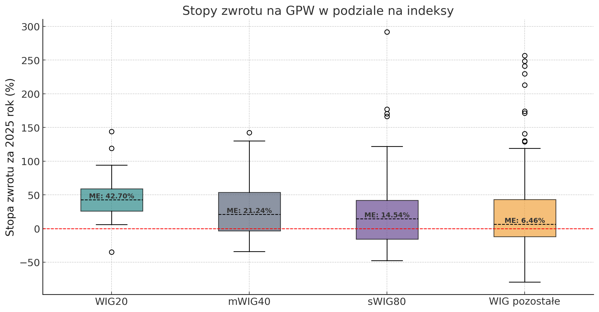

Tomasz Szczerbicki - analizy giełdowe
O mnie
O giełdzie i danych w przystępny sposób
Kategorie
Wszystkie
(4)
Analiza techniczna
(1)
analysis
(2)
code
(2)
GPW
(1)
mWIG40
(1)
news
(3)
podsumowanie roczne
(1)
sWIG80
(1)
WIG
(1)
WIG20
(1)

Podsumowanie 2025 roku na GPW
Duże wzrosty, lecz nie dla każdego
Analiza techniczna
GPW
WIG
WIG20
mWIG40
sWIG80
podsumowanie roczne
Za nami rok 2025, który na Giełdzie Papierów Wartościowych obfitował w imponujące wzrosty. W tym wpisie podsumuję kto skorzystał, a kto stracił najbardziej; jak duże ryzyka…
2026-01-22
Tomasz Szczerbicki
Pierwszy post
news
code
analysis
To jest mój pierwszy post.
2026-01-10
Tomasz Szczerbicki
Welcome To My Blog
news
This is the first post in a Quarto blog. Welcome!
2026-01-07
Tristan O’Malley
Post With Code
news
code
analysis
This is a post with executable code.
2026-01-05
Harlow Malloc
Brak pasujących